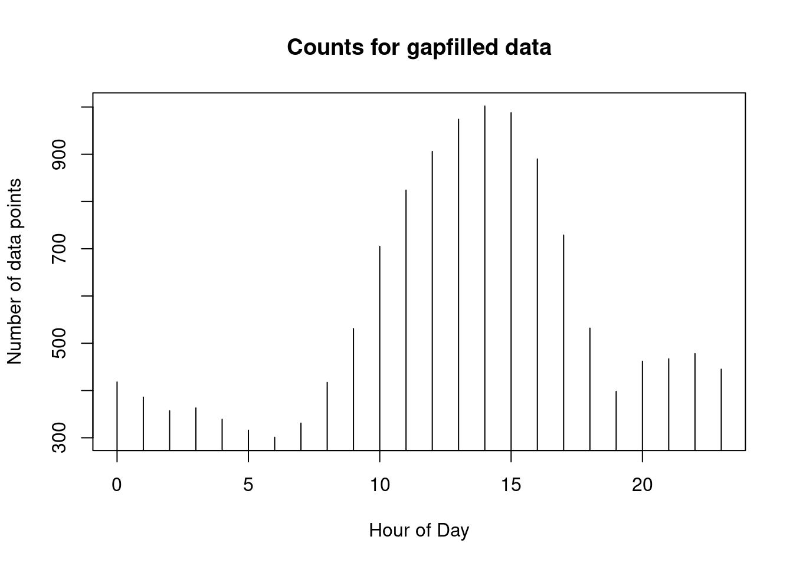
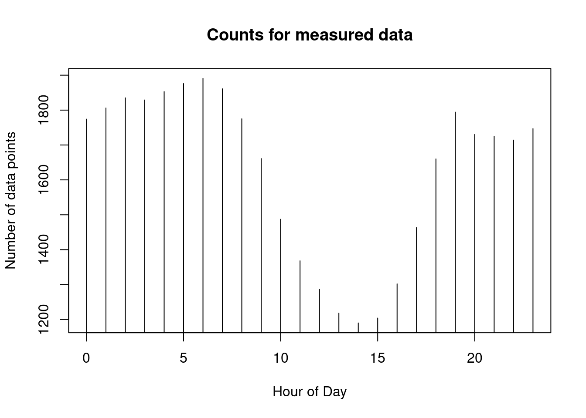
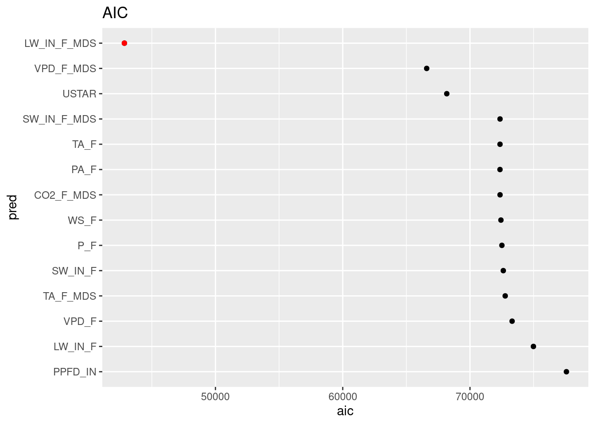

Session info
## ─ Session info ───────────────────────────────────────────────────────────────
## setting value
## version R version 4.2.2 (2022-10-31)
## os Ubuntu 22.04.1 LTS
## system x86_64, linux-gnu
## ui X11
## language (EN)
## collate C.UTF-8
## ctype C.UTF-8
## tz UTC
## date 2023-02-16
## pandoc 2.19.2 @ /usr/bin/ (via rmarkdown)
##
## ─ Packages ───────────────────────────────────────────────────────────────────
## ! package * version date (UTC) lib source
## P assertthat 0.2.1 2019-03-21 [?] RSPM (R 4.2.0)
## P backports 1.4.1 2021-12-13 [?] RSPM (R 4.2.0)
## base64enc 0.1-3 2015-07-28 [1] RSPM (R 4.2.0)
## P bit 4.0.5 2022-11-15 [?] RSPM (R 4.2.0)
## P bit64 4.0.5 2020-08-30 [?] RSPM (R 4.2.0)
## P bookdown 0.31 2022-12-13 [?] RSPM (R 4.2.0)
## P broom * 1.0.2 2022-12-15 [?] RSPM (R 4.2.0)
## bslib 0.4.2 2022-12-16 [1] RSPM (R 4.2.0)
## cachem 1.0.6 2021-08-19 [1] RSPM (R 4.2.0)
## P caret * 6.0-93 2022-08-09 [?] RSPM (R 4.2.0)
## P cellranger 1.1.0 2016-07-27 [?] RSPM (R 4.2.0)
## P class 7.3-21 2023-01-23 [?] RSPM (R 4.2.0)
## cli 3.6.0 2023-01-09 [1] RSPM (R 4.2.0)
## P codetools 0.2-19 2023-02-01 [?] RSPM (R 4.2.0)
## P colorspace 2.0-3 2022-02-21 [?] RSPM (R 4.2.0)
## P cowplot * 1.1.1 2020-12-30 [?] RSPM (R 4.2.0)
## crayon 1.5.2 2022-09-29 [1] RSPM (R 4.2.0)
## curl 5.0.0 2023-01-12 [1] RSPM (R 4.2.0)
## P data.table 1.14.6 2022-11-16 [?] RSPM (R 4.2.0)
## P DBI 1.1.3 2022-06-18 [?] RSPM (R 4.2.0)
## P dbplyr 2.2.1 2022-06-27 [?] RSPM (R 4.2.0)
## digest 0.6.31 2022-12-11 [1] RSPM (R 4.2.0)
## P dplyr * 1.0.10 2022-09-01 [?] RSPM (R 4.2.0)
## P e1071 * 1.7-12 2022-10-24 [?] RSPM (R 4.2.0)
## ellipsis 0.3.2 2021-04-29 [1] RSPM (R 4.2.0)
## P evaluate 0.19 2022-12-13 [?] RSPM (R 4.2.0)
## P fansi 1.0.3 2022-03-24 [?] RSPM (R 4.2.0)
## P farver 2.1.1 2022-07-06 [?] RSPM (R 4.2.0)
## fastmap 1.1.0 2021-01-25 [1] RSPM (R 4.2.0)
## P forcats * 0.5.2 2022-08-19 [?] RSPM (R 4.2.0)
## P foreach 1.5.2 2022-02-02 [?] RSPM (R 4.2.0)
## P fs 1.5.2 2021-12-08 [?] RSPM (R 4.2.0)
## P furrr 0.3.1 2022-08-15 [?] RSPM (R 4.2.0)
## P future 1.30.0 2022-12-16 [?] RSPM (R 4.2.0)
## P future.apply 1.10.0 2022-11-05 [?] RSPM (R 4.2.0)
## P gargle 1.2.1 2022-09-08 [?] RSPM (R 4.2.0)
## P generics 0.1.3 2022-07-05 [?] RSPM (R 4.2.0)
## P ggplot2 * 3.4.0 2022-11-04 [?] RSPM (R 4.2.0)
## P globals 0.16.2 2022-11-21 [?] RSPM (R 4.2.0)
## glue 1.6.2 2022-02-24 [1] RSPM (R 4.2.0)
## P googledrive 2.0.0 2021-07-08 [?] RSPM (R 4.2.0)
## P googlesheets4 1.0.1 2022-08-13 [?] RSPM (R 4.2.0)
## P gower 1.0.1 2022-12-22 [?] RSPM (R 4.2.0)
## P gtable 0.3.1 2022-09-01 [?] RSPM (R 4.2.0)
## P hardhat 1.2.0 2022-06-30 [?] RSPM (R 4.2.0)
## P haven 2.5.1 2022-08-22 [?] RSPM (R 4.2.0)
## P hexbin * 1.28.2 2021-01-08 [?] RSPM (R 4.2.0)
## highr 0.10 2022-12-22 [1] RSPM (R 4.2.0)
## P hms 1.1.2 2022-08-19 [?] RSPM (R 4.2.0)
## htmltools 0.5.4 2022-12-07 [1] RSPM (R 4.2.0)
## P httr 1.4.4 2022-08-17 [?] RSPM (R 4.2.0)
## P hwsdr * 1.0 2021-06-30 [?] RSPM (R 4.2.2)
## P ipred 0.9-13 2022-06-02 [?] RSPM (R 4.2.0)
## P iterators 1.0.14 2022-02-05 [?] RSPM (R 4.2.0)
## jquerylib 0.1.4 2021-04-26 [1] RSPM (R 4.2.0)
## jsonlite * 1.8.4 2022-12-06 [1] RSPM (R 4.2.0)
## P knitr 1.41 2022-11-18 [?] RSPM (R 4.2.0)
## P labeling 0.4.2 2020-10-20 [?] RSPM (R 4.2.0)
## P lattice * 0.20-45 2021-09-22 [?] CRAN (R 4.2.2)
## P lava 1.7.1 2023-01-06 [?] RSPM (R 4.2.0)
## lifecycle 1.0.3 2022-10-07 [1] RSPM (R 4.2.0)
## P listenv 0.9.0 2022-12-16 [?] RSPM (R 4.2.0)
## P lubridate * 1.9.0 2022-11-06 [?] RSPM (R 4.2.0)
## magrittr 2.0.3 2022-03-30 [1] RSPM (R 4.2.0)
## P MASS 7.3-58.2 2023-01-23 [?] RSPM (R 4.2.0)
## P Matrix 1.5-1 2022-09-13 [?] CRAN (R 4.2.2)
## memoise 2.0.1 2021-11-26 [1] RSPM (R 4.2.0)
## P mgcv 1.8-41 2022-10-21 [?] CRAN (R 4.2.2)
## P ModelMetrics 1.2.2.2 2020-03-17 [?] RSPM (R 4.2.0)
## P modelr * 0.1.10 2022-11-11 [?] RSPM (R 4.2.0)
## P MODISTools * 1.1.4 2023-01-18 [?] RSPM (R 4.2.0)
## P munsell 0.5.0 2018-06-12 [?] RSPM (R 4.2.0)
## P nlme 3.1-162 2023-01-31 [?] RSPM (R 4.2.0)
## P nnet 7.3-18 2022-09-28 [?] CRAN (R 4.2.2)
## P parallelly 1.34.0 2023-01-13 [?] RSPM (R 4.2.0)
## pillar 1.8.1 2022-08-19 [1] RSPM (R 4.2.0)
## pkgconfig 2.0.3 2019-09-22 [1] RSPM (R 4.2.0)
## P plyr 1.8.8 2022-11-11 [?] RSPM (R 4.2.0)
## P pROC 1.18.0 2021-09-03 [?] RSPM (R 4.2.0)
## P prodlim 2019.11.13 2019-11-17 [?] RSPM (R 4.2.0)
## P proxy 0.4-27 2022-06-09 [?] RSPM (R 4.2.0)
## P purrr * 1.0.1 2023-01-10 [?] RSPM (R 4.2.0)
## R6 2.5.1 2021-08-19 [1] RSPM (R 4.2.0)
## P ranger * 0.14.1 2022-06-18 [?] RSPM (R 4.2.0)
## P Rcpp 1.0.9 2022-07-08 [?] RSPM (R 4.2.0)
## P readr * 2.1.3 2022-10-01 [?] RSPM (R 4.2.0)
## P readxl 1.4.1 2022-08-17 [?] RSPM (R 4.2.0)
## P recipes * 1.0.4 2023-01-11 [?] RSPM (R 4.2.0)
## P renv * 0.16.0 2022-09-29 [?] RSPM (R 4.2.0)
## P repr 1.1.6 2023-01-26 [?] RSPM (R 4.2.0)
## P reprex 2.0.2 2022-08-17 [?] RSPM (R 4.2.0)
## P reshape2 1.4.4 2020-04-09 [?] RSPM (R 4.2.0)
## rlang 1.0.6 2022-09-24 [1] RSPM (R 4.2.0)
## P rmarkdown * 2.19 2022-12-15 [?] RSPM (R 4.2.0)
## P rpart * 4.1.19 2022-10-21 [?] CRAN (R 4.2.2)
## P rpart.plot * 3.1.1 2022-05-21 [?] RSPM (R 4.2.0)
## P rsample * 1.1.1 2022-12-07 [?] RSPM (R 4.2.0)
## rstudioapi 0.14 2022-08-22 [1] RSPM (R 4.2.0)
## P rvest 1.0.3 2022-08-19 [?] RSPM (R 4.2.0)
## P sass 0.4.4 2022-11-24 [?] RSPM (R 4.2.0)
## P scales 1.2.1 2022-08-20 [?] RSPM (R 4.2.0)
## P scico * 1.3.1 2022-08-19 [?] RSPM (R 4.2.0)
## P sessioninfo * 1.2.2 2021-12-06 [?] RSPM (R 4.2.0)
## P skimr * 2.1.5 2022-12-23 [?] RSPM (R 4.2.0)
## P sp 1.6-0 2023-01-19 [?] RSPM (R 4.2.0)
## stringi 1.7.12 2023-01-11 [1] RSPM (R 4.2.0)
## stringr * 1.5.0 2022-12-02 [1] RSPM (R 4.2.0)
## P survival 3.4-0 2022-08-09 [?] CRAN (R 4.2.2)
## P terra * 1.6-47 2022-12-02 [?] RSPM (R 4.2.0)
## tibble * 3.1.8 2022-07-22 [1] RSPM (R 4.2.0)
## P tidyr * 1.2.1 2022-09-08 [?] RSPM (R 4.2.0)
## P tidyselect 1.2.0 2022-10-10 [?] RSPM (R 4.2.0)
## P tidyverse * 1.3.2 2022-07-18 [?] RSPM (R 4.2.0)
## P timechange * 0.2.0 2023-01-11 [?] RSPM (R 4.2.0)
## P timeDate 4022.108 2023-01-07 [?] RSPM (R 4.2.0)
## P tzdb 0.3.0 2022-03-28 [?] RSPM (R 4.2.0)
## P usethis * 2.1.6 2022-05-25 [?] RSPM (R 4.2.0)
## P utf8 1.2.2 2021-07-24 [?] RSPM (R 4.2.0)
## P vctrs 0.5.1 2022-11-16 [?] RSPM (R 4.2.0)
## P viridisLite * 0.4.1 2022-08-22 [?] RSPM (R 4.2.0)
## P visdat * 0.5.3 2019-02-15 [?] RSPM (R 4.2.0)
## P vroom 1.6.0 2022-09-30 [?] RSPM (R 4.2.0)
## withr 2.5.0 2022-03-03 [1] RSPM (R 4.2.0)
## P xfun 0.36 2022-12-21 [?] RSPM (R 4.2.0)
## xml2 1.3.3 2021-11-30 [1] RSPM (R 4.2.0)
## P yaml 2.3.6 2022-10-18 [?] RSPM (R 4.2.0)
## P yardstick * 1.1.0 2022-09-07 [?] RSPM (R 4.2.0)
##
## [1] /home/runner/work/agds/agds/renv/library/R-4.2/x86_64-pc-linux-gnu
## [2] /home/runner/work/agds/agds/renv/sandbox/R-4.2/x86_64-pc-linux-gnu/99f2a2ef
##
## P ── Loaded and on-disk path mismatch.
##
## ──────────────────────────────────────────────────────────────────────────────13.4 Data prep
library(tidyverse)vec_files <- list.files("data", pattern = "_FLUXNET2015_FULLSET_DD_", full.names = TRUE)
list_df <- purrr:::map(as.list(vec_files), ~readr::read_csv(.))
names(list_df) <- vec_files
clean_fluxnet_dd <- function(df){
df %>%
## select only the variables we're interested in
select(starts_with("TIMESTAMP"),
ends_with("_F"),
ends_with("_F_MDS"),
# ends_with("_ERA"),
starts_with("_SWC_F_MDS"),
CO2_F_MDS,
PPFD_IN,
GPP_NT_VUT_REF,
NEE_VUT_REF_QC,
USTAR,
-starts_with("G_"),
-starts_with("LE_"),
-starts_with("H_"),
-contains("JSB")
) %>%
## convert to a nice date object
mutate(TIMESTAMP = lubridate::ymd(TIMESTAMP)) %>%
## not setting heavily gapfilled data to zero
## set all -9999 to NA
na_if(-9999) %>%
# drop NAs
drop_na() %>%
## filter bad data (at least 80% must be measured or good quality gapfilled)
mutate(GPP_NT_VUT_REF = ifelse(NEE_VUT_REF_QC < 0.8, NA, GPP_NT_VUT_REF)) %>%
## drop QC variables (no longer needed), except NEE_VUT_REF_QC
select(-ends_with("_QC"))
}
df <- purrr::map(list_df, ~clean_fluxnet_dd(.)) %>%
dplyr::bind_rows(.id = "siteid") %>%
dplyr::mutate(siteid = str_sub(siteid, start = 10, end = 15))
readr::write_csv(df, "data/df_for_stepwise_regression.csv")## specify target variable (as above)
target <- 'GPP_NT_VUT_REF'
## determine predictors as all except date, siteid and target
preds <- df %>%
dplyr::select(-target, -TIMESTAMP, -siteid) %>%
names()
# This is the vector of candidate predictors to be added in the model. To begin with, consider all as candidates.
preds_candidate <- preds
# predictors retained in the model from the previous step. To begin with, is empty.
preds_retained <- c()
## work with lists as much as possible (more flexible!)
df_metrics <- data.frame()
## outer loop for k predictors
for (k_index in 1:length(preds)){
# rsq_candidates <- c()
df_rsq_candidates <- data.frame()
linmod_candidates <- list()
## inner loop for single additional predictor
for (ipred in preds_candidate){
# variable vector (new variable + retained variables) used in regression
pred_add <- c(preds_retained, ipred)
# define formulate with newly-added predictor
forml <- as.formula(paste( target, '~', paste(pred_add, collapse = '+')))
# fit linear model
fit_lin <- lm(forml, data = df)
# add model object to list, and name the element according to the added variable
linmod_candidates[[ ipred ]] <- fit_lin
# record metrics for all candidates
rsq <- summary(fit_lin)[["r.squared"]]
df_rsq_candidates <- bind_rows(df_rsq_candidates, data.frame(pred = ipred, rsq = rsq)) # when storing R2 in a data frame
# rsq_candidates <- c(rsq_candidates, rsq) # when storing R2 as a vector
}
## get name of candidate predictor that achieved the highest R2.
pred_add <-
df_rsq_candidates %>% # when storing R2 in a data frame
arrange(desc(rsq)) %>%
slice(1) %>%
pull(pred) %>%
as.character()
# pred_add <- preds_candidate[ which.max(rsq_candidates) ] # when storing R2 as a vector
## add best predictors to retained predictors
preds_retained <- c(preds_retained, pred_add)
# record AIC and BIC and adjusted-R2 of the respective model
df_metrics <- df_metrics %>%
bind_rows(
data.frame( pred = pred_add,
rsq = summary(linmod_candidates[[ pred_add ]])[["r.squared"]],
adj_rsq = summary(linmod_candidates[[ pred_add ]])[["adj.r.squared"]],
aic = AIC(linmod_candidates[[ pred_add ]]),
bic = BIC(linmod_candidates[[ pred_add ]])
)
)
# remove the selected variable from the candidate variable list
preds_candidate <- preds_candidate[-which(preds_candidate == pred_add)]
# preds_candidate <- setdiff(preds_candidate,pred_add) # alternative
# Printing information on model development
cat("\n Next Best Model: GPP_NT_VUT_REF ~ ", paste(preds_retained, collapse = " + "))
}##
## Next Best Model: GPP_NT_VUT_REF ~ PPFD_IN
## Next Best Model: GPP_NT_VUT_REF ~ PPFD_IN + LW_IN_F
## Next Best Model: GPP_NT_VUT_REF ~ PPFD_IN + LW_IN_F + VPD_F
## Next Best Model: GPP_NT_VUT_REF ~ PPFD_IN + LW_IN_F + VPD_F + TA_F_MDS
## Next Best Model: GPP_NT_VUT_REF ~ PPFD_IN + LW_IN_F + VPD_F + TA_F_MDS + WS_F
## Next Best Model: GPP_NT_VUT_REF ~ PPFD_IN + LW_IN_F + VPD_F + TA_F_MDS + WS_F + USTAR
## Next Best Model: GPP_NT_VUT_REF ~ PPFD_IN + LW_IN_F + VPD_F + TA_F_MDS + WS_F + USTAR + SW_IN_F
## Next Best Model: GPP_NT_VUT_REF ~ PPFD_IN + LW_IN_F + VPD_F + TA_F_MDS + WS_F + USTAR + SW_IN_F + P_F
## Next Best Model: GPP_NT_VUT_REF ~ PPFD_IN + LW_IN_F + VPD_F + TA_F_MDS + WS_F + USTAR + SW_IN_F + P_F + CO2_F_MDS
## Next Best Model: GPP_NT_VUT_REF ~ PPFD_IN + LW_IN_F + VPD_F + TA_F_MDS + WS_F + USTAR + SW_IN_F + P_F + CO2_F_MDS + PA_F
## Next Best Model: GPP_NT_VUT_REF ~ PPFD_IN + LW_IN_F + VPD_F + TA_F_MDS + WS_F + USTAR + SW_IN_F + P_F + CO2_F_MDS + PA_F + LW_IN_F_MDS
## Next Best Model: GPP_NT_VUT_REF ~ PPFD_IN + LW_IN_F + VPD_F + TA_F_MDS + WS_F + USTAR + SW_IN_F + P_F + CO2_F_MDS + PA_F + LW_IN_F_MDS + TA_F
## Next Best Model: GPP_NT_VUT_REF ~ PPFD_IN + LW_IN_F + VPD_F + TA_F_MDS + WS_F + USTAR + SW_IN_F + P_F + CO2_F_MDS + PA_F + LW_IN_F_MDS + TA_F + VPD_F_MDS
## Next Best Model: GPP_NT_VUT_REF ~ PPFD_IN + LW_IN_F + VPD_F + TA_F_MDS + WS_F + USTAR + SW_IN_F + P_F + CO2_F_MDS + PA_F + LW_IN_F_MDS + TA_F + VPD_F_MDS + SW_IN_F_MDSdata.frame(df_metrics$pred) # order in which variables enter the model## df_metrics.pred
## 1 PPFD_IN
## 2 LW_IN_F
## 3 VPD_F
## 4 TA_F_MDS
## 5 WS_F
## 6 USTAR
## 7 SW_IN_F
## 8 P_F
## 9 CO2_F_MDS
## 10 PA_F
## 11 LW_IN_F_MDS
## 12 TA_F
## 13 VPD_F_MDS
## 14 SW_IN_F_MDSdf_metrics %>%
arrange(desc(rsq)) %>%
knitr::kable()| pred | rsq | adj_rsq | aic | bic |
|---|---|---|---|---|
| SW_IN_F_MDS | 0.5287706 | 0.5280746 | 42844.05 | 42958.58 |
| VPD_F_MDS | 0.5287706 | 0.5281244 | 42842.05 | 42949.42 |
| TA_F | 0.5287514 | 0.5281550 | 42840.43 | 42940.65 |
| LW_IN_F_MDS | 0.5287106 | 0.5281639 | 42839.25 | 42932.31 |
| PA_F | 0.5286660 | 0.5281690 | 42838.15 | 42924.05 |
| CO2_F_MDS | 0.5276995 | 0.5272513 | 42855.60 | 42934.34 |
| P_F | 0.5267412 | 0.5263421 | 42872.84 | 42944.43 |
| SW_IN_F | 0.5248973 | 0.5245468 | 42907.76 | 42972.19 |
| USTAR | 0.5212628 | 0.5209600 | 42978.11 | 43035.38 |
| WS_F | 0.5061483 | 0.5058880 | 43271.22 | 43321.33 |
| TA_F_MDS | 0.5008611 | 0.5006507 | 43370.32 | 43413.27 |
| VPD_F | 0.4909870 | 0.4908261 | 43554.30 | 43590.10 |
| LW_IN_F | 0.4374452 | 0.4373266 | 44501.85 | 44530.48 |
| PPFD_IN | 0.3627837 | 0.3627166 | 45682.99 | 45704.47 |
library(ggplot2)
df_metrics$pred <- factor(df_metrics$pred, levels = df_metrics$pred)
ggplot() +
geom_point(data = df_metrics, aes(x = pred, y = rsq)) +
geom_point(data = filter(df_metrics, rsq == max(rsq)), aes(x = pred, y = rsq), color = "red") +
labs(title = expression(italic(R)^2)) +
coord_flip()
ggplot() +
geom_point(data = df_metrics, aes(x = pred, y = adj_rsq)) +
geom_point(data = filter(df_metrics, adj_rsq == max(adj_rsq)), aes(x = pred, y = adj_rsq), color = "red") +
labs(title = expression(paste("Adjusted-", italic(R)^2))) +
coord_flip()
ggplot() +
geom_point(data = df_metrics, aes(x = pred, y = aic)) +
geom_point(data = filter(df_metrics, aic == min(aic)), aes(x = pred, y = aic), color = "red") +
labs(title = "AIC")+
coord_flip()
ggplot() +
geom_point(data = df_metrics, aes(x = pred, y = bic)) +
geom_point(data = filter(df_metrics, bic == min(bic)), aes(x = pred, y = bic), color = "red") +
labs(title = "BIC")+
coord_flip()